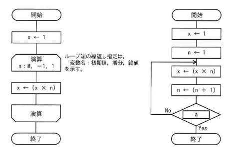

正の整数Mに対して，次の二つの流れ図に示すアルゴリズムを実行したとき，結果xの値が等しくなるようにしたい。aに入れる条件として，適切なものはどれか。
【左の流れ図】
開始
x ← 1
[演算] n: M, -1, 1 （ループ端の繰り返し指定は、変数名：初期値、増分、終値を示す）
x ← (x × n)
[演算終わり]
終了
【右の流れ図】
開始
x ← 1
n ← 1
↓
x ← (x × n)
n ← (n + 1)
[ a ] --No-→ （x←(x×n)へ戻る）
↓ Yes
終了
ア n＜M イ n＞M－1 ウ n＞M エ n＞M＋1

ウ：n＞M
| 選択肢 | 内容 | 補足 |
|---|---|---|
| ア | n＜M | nは1から増加していく変数のため、この条件ではnがMより小さい限りループが終了せず、Mの値によっては無限ループまたは意図しない回数の繰り返しになる |
| イ | n＞M－1 | M=2のときn=2で条件を満たして終了してしまい、x=1のままでM!（=2）が計算できないなど、Mによって正しい結果にならない |
| ウ | n＞M | 正解。nがMに達するまで x←x×n を繰り返し、n=M+1になった時点でループを抜けるため、ちょうどM!（1×2×…×M）が得られる |
| エ | n＞M＋1 | n=M+1の時点でも条件を満たさずループが1回余分に実行され、x=(M+1)!となってM!より大きい値になってしまう |
出典：2024年度 春期 応用情報技術者試験 午前 問5（IPA）